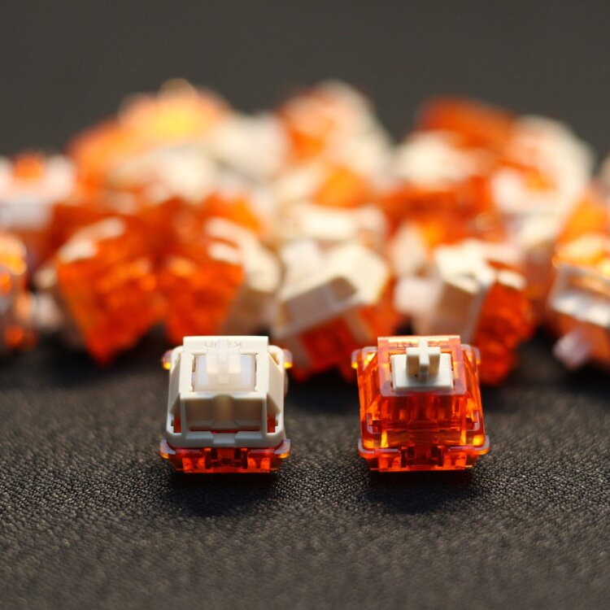

Creamsicle

Description
The Creamsicles are one of the smoothest linear frankenswitches.
It utilizes an cream stem which is extremely smooth when paired with the housing of C3 tangerines.
Ingredients
- C3 tangerine top and bottom housing
- Kailh cream stem (or equivalent like Kailh black stem)
- Any stock or aftermarket spring of your choice
Steps
- Harvest tangerine top and bottom housings from a C3 tangerine switch.
- Make sure you keep the springs if you don't plan on buying any aftermarket springs!
- Harvest Kailh cream stems from a Novelkeys Cream switch.
There are many other alternative stems that can be used for the Creamsicles like the Kailh black switches.
- Begin assembling the switch, take a tangerine bottom housing and lube it with Krytox 205g0.
- Take your spring and lube it. Place it on the pole of the tangerine bottom housing.
- Take your Kailh stem and lube it. Place it on the spring where the legs of the stem face towards the leaf of the bottom housing.
- Finish assembling the switch by snapping on the tangerine top housing on your Creamsicle switch. There is no need to lube the top housing.
Congrats! You have created your Creamsicle switches!
Sources